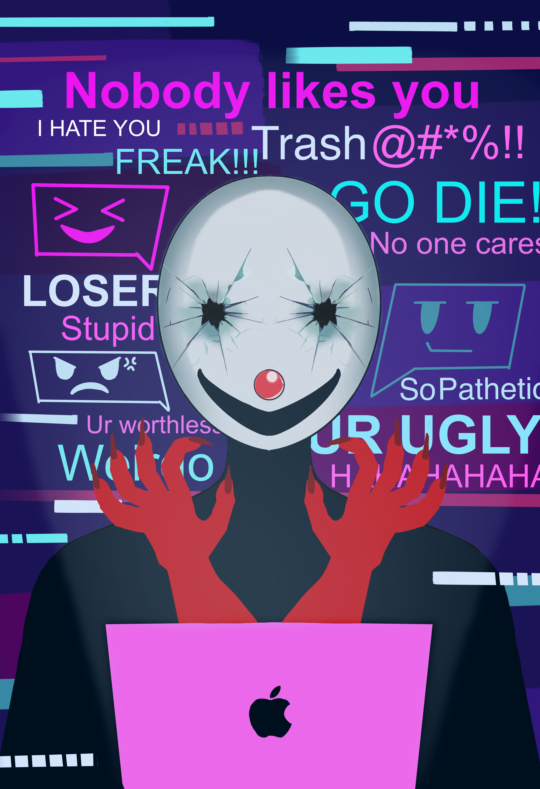

A digital poster exploring the consequences of our digital footprint and the hidden harm created behind anonymous screens.

Medium: Digital Media
Size: 13 × 19 in
Software: Procreate
CAUTION addresses the lasting impact of our digital footprint. In an era where posting online often feels casual and consequence-free, this poster reflects on how harmful actions behind a screen can affect others — and eventually return to the perpetrator.
The composition depicts a masked figure illuminated by the glow of a MacBook, with red monster hands reaching toward their neck. The mask symbolizes anonymity and the idea that anyone can become the perpetrator behind the screen. Its shattered-glass eyes represent willful blindness — individuals who refuse to seek truth and instead choose to spread harm. The exaggerated clown-like smile suggests mockery and attention-seeking behavior, emphasizing the performative cruelty often seen online.
Toxic comments fill the background within the MacBook’s glow, reflecting the real language frequently encountered on social platforms. The comments are set in Arial, chosen for its similarity to commonly used online fonts. Neon colors dominate the palette to evoke digital environments, while the MacBook shares these hues to reinforce the connection between user and platform.
The red monster hands act as a symbolic warning — a manifestation of karma. They represent the harm created through digital actions, waiting to “strike back.” Through this work, I aim to caution viewers that anonymity does not erase responsibility, and that digital harm leaves a trace.